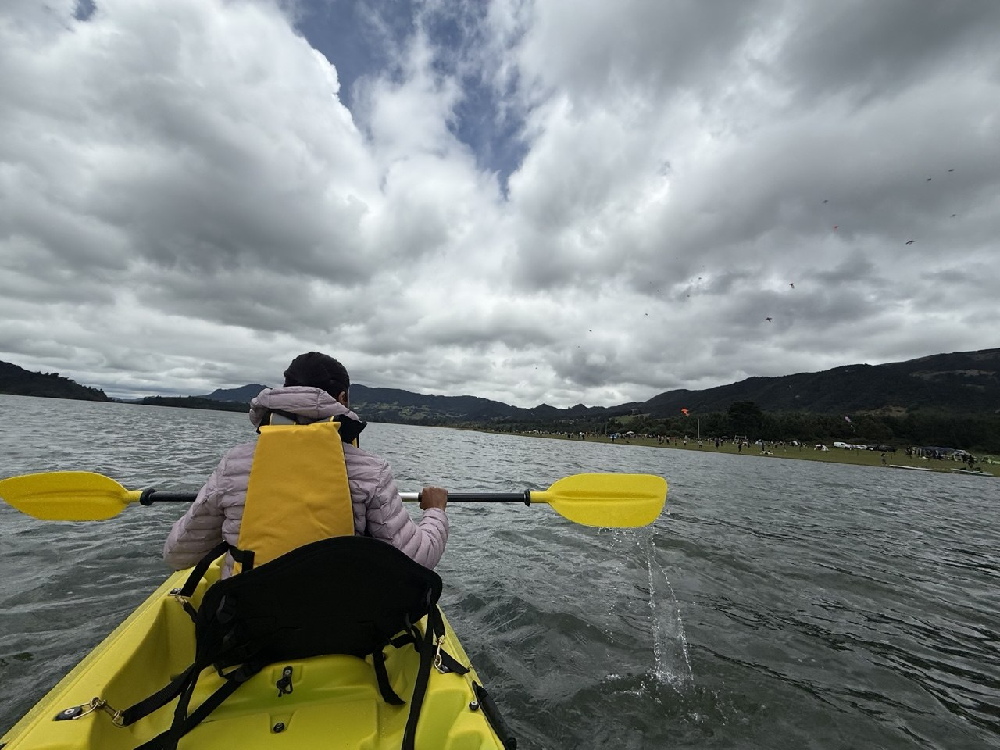
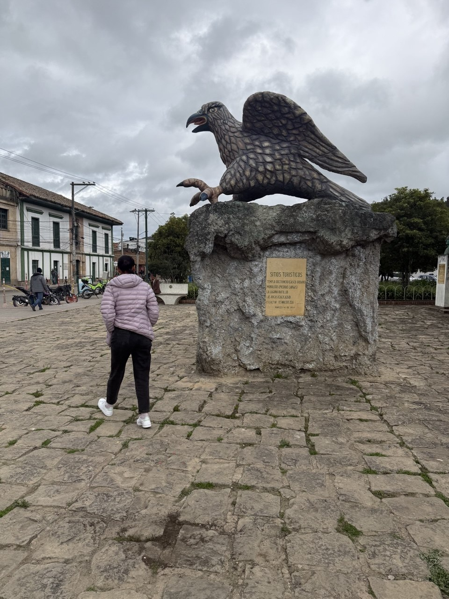
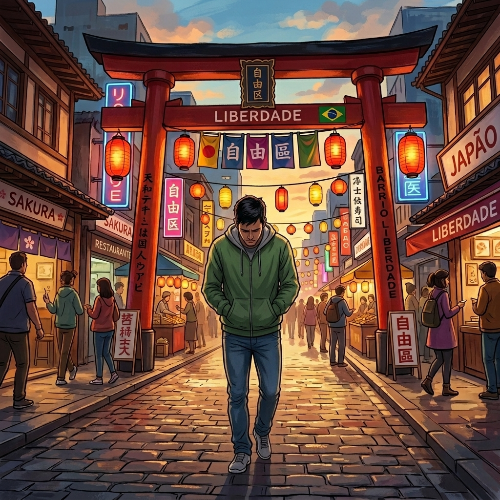

Sólo pido que escuches la canción..
Es verdad que yo debo decidir que quiero y expresarlo ..
Está bien dejémonos de mamadas e hipocresía (yo)..
eso no significa que no desee lo mejor para ti..
Quiero que me sigas pensando aunque sea un poco..
que me sigas deseando y ..
que cuentes conmigo cuando pienses que estés sola..
Tú debes decidir? claro, tú lo dijiste, tu proyecto de vida, tu futuro,
lo mejor para ti y tu familia, lo que deseas y sueñas..
hazlo en tu tiempo yo respetaré lo que quieras,
incluso cortar cualquier vínculo.. y si mientras llega eso..

Sólo sé que fui muy feliz este fin de semana y
sabía que el regreso fuera cuál fuera no iba a ser fácil..
espero que sea un buen recuerdo para ti también,
que te quedes con lo bueno,

te deseo la mejor semana posible..
yo caminaré mucho pero será con Morenita en mi cabeza,
Pregunté a dónde querrías viajar? ..

Te dedico (sí!) una de mis canciones favoritas, porque somos seres cambiantes con una esencia,
tú has cambiado, yo estoy cambiando,
que seas una mica! ..